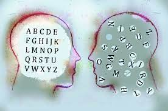

Dyslexia is a common condition that makes it hard to work with language. Some experts believe that between 5 and 10 percent of people have it. Others say as many as 17 percent of people show signs of reading challenges.
People with dyslexia don’t outgrow it. But there are teaching approaches and strategies that can help them improve their reading skills and manage the challenges. People of any age can be tested for dyslexia, although the tests are different for adults than for kids.
People with dyslexia typically have trouble reading fluently . They often read slowly and make mistakes. That can impact how well they comprehend what they read. But when other people read to them, they often have no problem understanding the text.
Dyslexia can create difficulty with other skills, too. These include:
Reading comprehension
Spelling
Writing
Math

Dyslexia impacts people in different ways. So, symptoms might not look the same from one person to another.
A key sign of dyslexia is trouble decoding words . This is the ability to match letters to sounds. Kids can also struggle with a more basic skill called phonemic awareness . This is the ability to recognize the sounds in words. Trouble with phonemic awareness can show up as early as preschool.